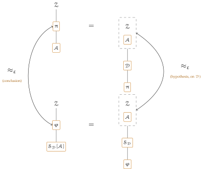

The dummy adversary carries out whatever the environment tells it and reports back whatever it is told; it has no strategy of its own. Anything a real adversary achieves, an environment can achieve by driving the dummy, which is why quantifying over adversaries can be replaced by quantifying over environments. This section defines it and proves that, for the systems and classes the theorem makes precise — Remark 9.4 records the one regime, cores placing responsive calls, that the claim does not reach.
What the framework already fixes. The dummy is not a new kind of machine. It is the adversary of Section 3.4 with a particular core, so it carries \(\Adv \)’s fields and its calls pass through \(\Adv \)’s wrapper. Three consequences settle the shape of the code before a line of it is written.
First, it may claim one identity only. Line 2 of the \(\Adv \) box silences a core on \(\{\id '' \ne \id \}\), so every call the dummy places claims \(\id \), the identity it runs at. An instruction of the form “call \(\id ''.\Op \) as \(\id '''\)” therefore cannot be carried out for an arbitrary \(\id '''\): the dummy speaks as \((A,\id .P)\) or not at all. What the environment chooses is not the claimed id but the party, by instructing the dummy at \((A,P)\) rather than at \((A,Q)\); the root of \(\Zenv \) may act for any party and so may pick either.
Second, the party of the target is forced. The predicate \(\opl {Guard}\) asks \(\id '.P = \id .P\) of the callee, and the claim is \((A,\id .P)\), so the dummy at \((A,P)\) reaches interfaces of party \(P\) and no other. A target that does not admit \(\Apid \), or an honest party, refuses the call by line 2 or line 3; the dummy passes the refusal back, and the rule of Section 3.6 delivers it to the dummy’s own caller as \(\none \).
Third, its route to the environment is fixed too: \((A,P) \to (Z,P)\), which \(\opl {Guard}_{\Zenv }\) admits because \(\Apid \subseteq \Zenv .\admits \) and the parties agree.
The code. The core dispatches on who called it. A call from the environment is an instruction to carry out; a call from anything else — a mediation hook, or an \(\Adv (\cdot )\) placed inside some core — is a message to hand on. In both directions the payload has the shape \(\opl {Mediate}\) already uses, an operation together with a value.
Dummy adversary \(\Dum \)
\(\PID := A\), \(\Ps := \bits \cup \{A,Z\}\), \(\admits := \Stdpid \cup \Apid \cup \Zpid \), \(\uses := \{(\Zenv ,\serves )\}\), \(\pars := \none \)
\(\id .\op {A}(in)\) from \(\id '\)
Line 3 is the outward direction: the environment names a target interface and an input, and the dummy places exactly that call and returns exactly its answer. Nothing is inspected and nothing remembered — the dummy keeps no state, so it has no \(\op {Initialize}\). Line 5 is the inward one: whatever reaches the adversary is handed to the environment together with the identity it came from, and whatever the environment answers is returned to that caller unchanged. The two lines are the same relay read in opposite directions, which is what makes the dummy transparent.
An instruction line 2 cannot parse is answered with \(\none \): the guards answer anything the dummy cannot place with \(\rej \), but a payload that names no call at all needs a value of its own, and \(\none \) is what a machine with nothing to say returns.
One detail is worth pausing on. The caller \(\id '\) is passed to \(\Zenv \) on line 5 and not merely the payload: without it the environment could not tell which interface is asking, and a relay that loses that cannot be transparent.
Interposing an adversary. Completeness is a statement about moving an adversary from the execution into the machines around it, and needs a name for each move. Both are the same operation seen from two sides: \(\Adv \) is placed between some machine and the dummy interface, so what used to reach \(\Adv \) now reaches it inside, and what \(\Adv \) used to place now leaves as an instruction to \(\Dum \).
Definition 4.26 (Adversary absorbed into the environment). Let \(\Zenv \) be an environment and \(\Adv \) an adversary. The environment \(\Zenv ^{\Adv }\) is the bundle (Definition 4.13) of \(\Zenv \) with one copy of \(\Adv \), the copy not keeping its identities; it occupies \(\IDs (\Zenv )\) alone and takes its output and \(\pars \) from \(\Zenv \). A call \(\Zenv \) places on an \(A\)-identity is served internally by \(\Adv \)’s interface there, and one \(\Adv \) places on a \(Z\)-identity by \(\Zenv \)’s. Any other call the hosted \(\Adv \) places, on \(\id ''.\fopl {Op}(x)\) while running at \((A,P)\), is rewritten to the instruction
keyed to the party \(\Adv \) runs at and never its target’s, so a call the unabsorbed \(\Adv \) could place only as \((A,P)\) is relayed at that same party and admitted or refused exactly where it was. A call arriving from an \(A\)-identity with payload \((\id ',in)\) is handed to \(\Adv \)’s interface at \((A,P)\), guard included, as a call from \(\id '\).
Definition 4.27 (Adversary interposed before a simulator). Let \(\Sim \) be a simulator and \(\Adv \) an adversary. The simulator \(\Sim [\Adv ]\) is the bundle (Definition 4.13) of \(\Sim \) with one copy of \(\Adv \); it occupies \(\IDs (\Adv )\) and carries \(\Sim \)’s remaining fields — \(\Sim \), not \(\Adv \), being the machine it stands in for, so \(\Sim [\Adv ]\) is a simulator whenever \(\Sim \) is. A call from a \(Z\)-identity is served by the hosted \(\Adv \); one from any other process id, a mediation hook in particular, by \(\Sim \). The hosted \(\Adv \)’s calls on a \(Z\)-identity — its route back to the environment — leave the bundle under \((A,P)\) to the external \(\Zenv \); its other outward calls become the instruction of Definition 4.26, served by \(\Sim \) at \((A,P)\) as a call from \((Z,P)\); and a call \(\Sim \) places on a \(Z\)-identity is handed, past \(\opl {Guard}_{\Zenv }\), to \(\Adv \) at \((A,P)\).
Neither construction is a new kind of machine. The bundle \(\Zenv ^{\Adv }\) occupies what an environment occupies and claims what \(\Zenv \) claimed, so it is admissible exactly when \(\Zenv \) is. It occupies no \(A\)-identity, those being the relay’s in the right-hand execution, so by Definition 4.13 the hosted \(\Adv \) has no identity of its own to place a call under: hence the rewriting above, and hence the obligation — discharged by Siting below — to check the rewritten claim against \(\Zenv \)’s silencer. Absorption in Chapter 4 is the other case of Definition 4.13, which is why a hosted functionality there keeps its claim instead. Meanwhile \(\Sim [\Adv ]\) occupies \(\IDs (\Adv )\), which is what standing in the adversary slot means.
The theorem. Emulation with respect to the dummy alone is Definition 4.11 with the adversary class cut down to the single machine \(\Dum \). The claim is that nothing is lost.
One mild condition on the adversary is needed, and it is the price of the dummy being a relay.
The dummy relays such an answer, and by Section 3.6 its own return of a \(\rej \) reaches the caller as \(\none \); so where an unabsorbed adversary placing a refused call reads \(\rej \) directly, the same adversary driving the dummy reads \(\none \). A refusal-oblivious adversary cannot tell the two apart, which is what the regrouping below needs. The dummy is itself refusal-oblivious — it relays its answer without branching on it — so the hypothesis costs the dummy class nothing, and a real adversary that reads a framework-internal refusal signal is in any case a modelling artefact rather than an attack.
Informally, Theorem 4.29 says that emulation with respect to the dummy alone loses nothing: anything a real adversary achieves, an environment can achieve by driving the dummy, and the simulator for \(\Adv \) is \(\Sim _{\Dum }[\Adv ]\) — the one simulator the hypothesis supplies, with \(\Adv \) interposed before it — which depends on \(\Adv \) alone and not on \(\Zenv \).
Theorem 4.29 (Completeness of the dummy adversary). Let \(\pi \) and \(\varphi \) be systems whose cores place no responsive calls (Definition 9.2), let \(\varepsilon \geq 0\), let \(\Aset \) be a class of refusal-oblivious adversaries (Definition 4.28), let \(\SimSet \) be a class of simulators, and let \(\ZenvSet \subseteq \ZenvSet _{\pi ,\varphi }\). Suppose
Then
where
Explicitly, let \(\Sim _{\Dum } \in \SimSet \) be the simulator the hypothesis supplies for \(\Dum \). Then
so the simulator Definition 4.11 asks for is \(\Sim _{\Dum }[\Adv ]\), which depends on \(\Adv \) alone and not on \(\Zenv \).
Proof. The whole of the argument is two regroupings, one per world, labelled (R1) and (R2) below. Granting them, the two advantages of the display agree term by term and the hypothesis at \(\Zenv ^{\Adv }\) bounds the second, which is the theorem. Neither is a pure rebracketing — the right-hand executions carry a machine the left-hand ones do not, the relay standing at the ceded identities — so both are the ceding half of Lemma 4.18 rather than Proposition 4.19’s. (R1) is that lemma applied directly, its three hypotheses being the theorem’s three. (R2) is the same argument run again with \(\varphi \) for \(\pi \) and \(\Sim _{\Dum }\) for \(\Dum \), and it needs an argument of its own because there the adversary moves from one bundle to another rather than out of the execution: what the lemma’s proof used of the machine in the slot is recounted and shown to hold of \(\Sim _{\Dum }[\Adv ]\) as well. The closing paragraph checks the quantifier order — \(\Sim _{\Dum }[\Adv ]\) depends on \(\Adv \) alone, the hypothesis knowing nothing of \(\Zenv \). Fix \(\Adv \in \Aset \) and \(\Zenv \in \ZenvSet '\), and let \(\Sim _{\Dum } \in \SimSet \) be the simulator the hypothesis supplies for \(\Dum \). Membership in \(\ZenvSet '\) gives \(\Zenv ^{\Adv } \in \ZenvSet \), so the hypothesis applies to it, and \(\Zenv ^{\Adv }.\pars = \Zenv .\pars \supseteq \ncl {\pi } \cup \ncl {\varphi }\), so the advantage on the right of the display is defined. The conventions of Proposition 4.19 — independent coins, unmerged tapes, call-free \(\op {Initialize}\) — are in force. The work is two regroupings, one per world:
each an equality of distributions; granting them, the two advantages agree term by term and the hypothesis at \(\Zenv ^{\Adv }\) bounds the second by \(\varepsilon \), which is the display. Neither is a pure rebracketing — the right-hand executions carry a machine the left-hand ones do not, the relay in the adversary slot — so both are the ceding half of Lemma 4.18 rather than Proposition 4.19’s.
Proof of (R1). Lemma 4.18 at \(H = \{\Adv \}\) with \(H_{\op {keep}} = \emptyset \), so that \(\Zenv ^{H}\) is the \(\Zenv ^{\Adv }\) of Definition 4.26 and the relay at the ceded \(\IDs (\Adv )\) is \(\Dum \). Its three hypotheses are the theorem’s: \(\Adv \) is refusal-oblivious because \(\Aset \) is; no core of \(\pi \) places a responsive call, which is the hypothesis on the systems; and \(\Zenv \in \ZenvSet '\) silences no \(Z\)-identity. The occupant families are legal, \(\Zenv ^{\Adv }\) occupying \(\IDs (\Zenv )\) alone and \(\Dum \) the identities \(\Adv \) let go. Proof of (R2). Here \(\Adv \) moves from one bundle to another rather than out of the execution, so Lemma 4.18 does not apply on its face and the argument is its ceding half run again with \(\varphi \) for \(\pi \) and \(\Sim _{\Dum }\) for \(\Dum \). That it transfers is a matter of what the lemma’s proof used of the machine in the slot, which is no more than that its guard returns \(\opl {Guard}_{\Adv }\)’s verdicts, that it dispatches on whether the claim has \(\id '.F = Z\), and — where the hosted \(\Adv \) reads a refused instruction, \(\rej \) from \(\Sim _{\Dum }\) inside the bundle on the left against the deemed \(\none \) across the slot on the right — that \(\Aset \) is refusal-oblivious, exactly as in (R1). What differs is which machine holds \(\Adv \) — \(\Sim _{\Dum }[\Adv ]\) on the left, \(\Zenv ^{\Adv }\) on the right — and Definitions 4.27 and 4.26 make the two perform the same hand-offs, each routed through the receiving machine’s guarded interface, the instruction travelling inside a machine on one side and across the execution on the other. The chain \(\Zenv \to \Adv \to \Sim _{\Dum } \to \varphi \) is the same in both, cut at a different point: \(\Sim _{\Dum }\) meets the same instructions in the same order under the same claims, Siting holds verbatim, and the occupant is judged by the same fields either way — \(\PID \) and \(\Ps \) by occupancy, and \(\admits \) by Definition 4.7, which \(\Sim _{\Dum }\) meets and \(\Sim _{\Dum }[\Adv ]\) inherits, carrying \(\Sim _{\Dum }\)’s fields by Definition 4.27; no guard reads the rest. Definition 4.27 routes the left-hand hand-off through the same guarded interface that \(\opl {Exec}\) serves on the right, and the hosted \(\Adv \)’s own calls back to \(\Zenv \) leave the bundle under \((A,P)\) just as they cross \(\opl {Exec}\) on the right.
Conclusion. By (R1) and (R2) the two advantages of the display are equal, and the hypothesis at \((\Dum ,\Zenv ^{\Adv })\) bounds the second by \(\varepsilon \). The simulator \(\Sim _{\Dum }[\Adv ]\) lies in \(\SimSet '\) and depends on \(\Adv \) alone, the hypothesis knowing nothing of \(\Zenv \), so the quantifier order of Definition 4.11 is met; \(\Zenv \in \ZenvSet '\) was arbitrary. □
Diagrammatically, the proof is the same commuting square as Theorem 4.20’s (the figure above its proof), built this time from the ceding half of Lemma 4.18 rather than the keeping half: what moves into \(\Zenv \) is not part of the system but the adversary itself, and a relay stands where it stood.

Bottom left is where the theorem starts: \(\pi \) and \(\varphi \) untouched throughout, \(\Adv \) the real-world occupant and \(\Sim _{\Dum }[\Adv ]\) — \(\Sim _{\Dum }\) with \(\Adv \) interposed before it — the derived ideal-world one. The top and bottom edges are (R1) and (R2) of the proof: absorbing \(\Adv \) into \(\Zenv \), on whichever side it is read, is again an equality of distributions, exactly as Proposition 4.19’s was — but this time it is the ceding half of Lemma 4.18 paying for it, hypotheses (a)–(c) in place of nothing, because what moves is the adversary itself and a relay (\(\Dum \), then \(\Sim _{\Dum }\)) has to stand in its place. The same absorbed \(\Zenv ^{\Adv }\) serves both sides, which is why the right edge can compare them at all: it is the theorem’s hypothesis, stated only against \(\Dum \). Chasing the square exactly as in Theorem 4.20, the left edge — the theorem’s conclusion, now for every refusal-oblivious \(\Adv \) rather than one fixed machine — is forced: the two \(\approx _\varepsilon \)’s are, by the two equalities, the same quantity.
The three classes move as in Theorem 4.20, and for the same reasons. The adversaries are those the conclusion quantifies over, and the hypothesis had only \(\Dum \); the simulators are computed, one per adversary, by interposing it before the simulator the hypothesis supplies; and the environments are a preimage, an outer \(\Zenv \) counting exactly when what it becomes on absorbing each \(\Adv \) is one the hypothesis covers. Taking \(\ZenvSet \) to be the largest admissible class makes \(\ZenvSet '\) the largest one again — less only the environments that silence their own \(Z\)-identities, a condition no admissibility imposes and no application wants, excluded because the instruction of Definition 4.26 leaves under a \(Z\)-claim, which such an environment would refuse on one side alone — since absorption leaves \(\pars \) alone.
Read concretely in the sense of Section 4.5, the two constructions cost what the adversary costs: if \(\Adv \) is \(\bd {a}\)-bounded then \(\Zenv ^{\Adv }\) needs \(\bd {z} \oplus \bd {a}\) where \(\Zenv \) needed \(\bd {z}\), and \(\Sim _{\Dum }[\Adv ]\) needs \(\bd {s} \oplus \bd {a}\) where \(\Sim _{\Dum }\) needed \(\bd {s}\). The invocation counts add and the per-invocation times take a maximum, both independent of \(\pi \) and \(\varphi \).